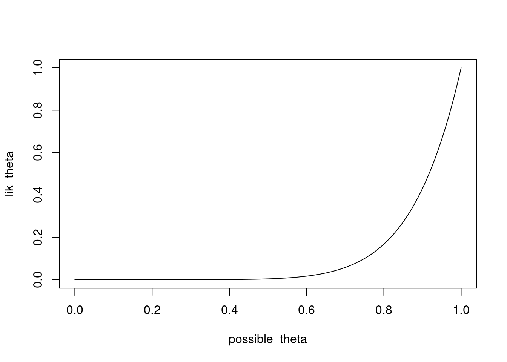
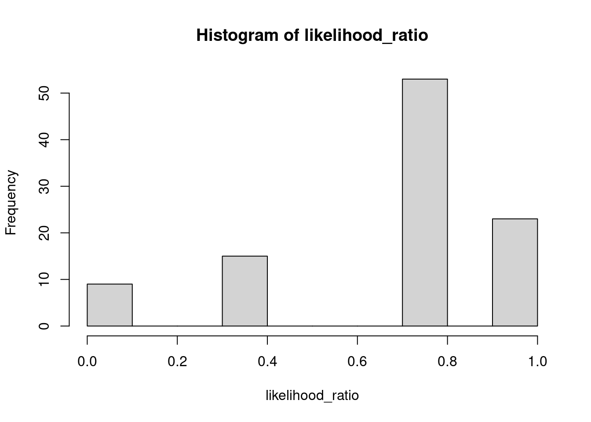

Chapter 2 Statistical modelling
As R was written by statisticians for statisticians, it naturally has very good support for statistical modelling. In particular, there are convenient functions for sampling observations from a wide-variety of probability distributions, and computing likelihoods according to those distributions. And of course, there is code to estimate and test many statistical models.
2.1 Distributions
R includes functions to calculate probabilities and generate random data from a wide variety of distributions (type ?distributions for an overview). The main distributions that we will use are:
| Distribution | R name | Parameters |
|---|---|---|
| Binomial | binom |
size (\(n\)), prob (\(\theta\)) |
| Chi-squared | chisq |
df |
| F | f |
df1, df2 |
| Normal | norm |
mean (\(\mu\)), sd (\(\sigma\)) |
| Student’s t | t |
df |
The statistical distribution functions all have a similar interface:
- you can generate random data by calling the R name with an
r(for random) before it (e.g.rbinomfor random draws from the Binomial distribution, andrnormfor random draws from the Normal distribution) - you can compute the probability (or density function value) of a particular value by calling the function with a
d(for density) before it (e.g.dbinomanddnorm) - you can compute a cumulative probability (the probability of a particular value and anything lower than it) by calling the function with a
p(for probability) before it (e.g.pbinom) - you can compute a quantile (the value such that there is a particular probability of sampling a value equal to or lower that it) by calling the function with a
q(for probability) before it (e.g.qbinom)
2.1.1 Generating random data
let’s use a coin tossing model to generate lots of replications of an experiment in which Paul is asked to provide 8 predictions. The dependent variable in each experiment is \(Y_i = k\), where \(k\) is the number of correct predictions (out of \(n=8\)). To generate 100 replications of such an experiment (e.g. 100 “alternate universes” where Paul might have made different predictions), we can use the rbinom function:
set.seed(4638)
Y <- rbinom(n=100, size=8, prob=0.5)
Y## [1] 5 4 5 2 5 2 4 5 3 4 3 5 4 5 3 4 6 3 2 3 0 3 5 5 1 2 5 4 6 3 5 4 4 1 3 5 3
## [38] 5 6 8 5 5 3 2 3 3 3 5 4 5 4 2 2 4 5 3 5 4 4 5 3 5 5 5 2 3 4 8 1 6 4 3 4 4
## [75] 3 6 3 4 5 4 1 3 1 5 3 5 4 5 5 4 5 3 3 6 4 4 3 5 1 6You can see quite some variability in the outcomes, perhaps easier in a histogram
hist(Y, breaks=8)Computers can’t actually generate real random data. Computers are deterministic, performing computations according to instructions. But clever algorithms have been designed that produce sequences of numbers that are (almost) indistinguishable from purely random sequences. These algorithms are called random number generators and the default in R is the so-called “Mersenne-Twister” algorithm. You don’t have to worry about the details of such algorithms. We can just pretend that they produce truly random numbers. One thing I do want to point out is that before you use one of such algorithms, they need to be initialized with a special number, called the random seed. A number like this basically sets the algorithm in motion. Starting it with a different seed will produce a different sequence of random numbers. If you start it with the same random seed, you get exactly the same sequence of random numbers. If you don’t supply a value, R will use the current time as the random seed the first time you ask it to produce a random number in a session. For the purposes of replicating things, it may be useful to set the seed explicitly (so that a subsequent call to a random number generator will produce exactly the same results.) Therefore, you will now and then see calls such as set.seed(4638) in these notes, which ensures that these notes have the same content every time I run R.
2.2 Estimation
2.2.1 The likelihood function
If we take a particular result, e.g. \(Y=8\) correct, it is straightforward to compute the probability of that result for different values of \(\theta\). Earlier, we already used 1:10 to obtain a sequence of integers from 1 to 10. Not we ae going to use a more general function seq, to obtain a sequence of possible values for \(\theta\) between 0 and 1. We will then supply this sequence as the prob argument to calculate the probability of the result according to each.
possible_theta <- seq(0,1,length=100)
lik_theta <- dbinom(8,size=8,possible_theta)
plot(x=possible_theta,y=lik_theta,type="l")
Instead of the first argument in dbinom being 8, you can try this for different values.
The maximum likelihood estimate \(\hat{\theta} = \frac{k}{n}\) is very simple to compute. Moreover, computations with R are vectorized. For instance, if Y is a vector, then Y/8 divides each element of Y by 8. And if Y and X are vectors of the same length, then Y/X divides each element of Y by the corresponding element of X.
So, to compute the maximum likelihood estimate of \(\theta\) for each of the simulated replications of the experiment, we can simply run:
theta_est <- Y/8which stores the estimates in the object theta_est.
2.2.2 Calculating the likelihood ratio
Having computed the estimate \(\hat{\theta}\) for each simulated dataset, we can also straightforwardly compute the likelihood ratio for each data set, comparing e.g. our MODEL R where we assume \(\theta = 0.5\) to MODEL G where we use \(\theta = \hat{\theta}\) instead. First, let’s caclulate the likelihood of each simulated dataset according to MODEL R. Again, we will make use of the fact that many functions in R are vectorized, such that if we ask R to calculate the probability for a vector of outcomes Y, the result is a vector with the probabilities for each element in Y
likelihood_R <- dbinom(Y, size=8, prob=.5)Remember, if you want to see what is in an R object, you can just type in the name:
likelihood_R## [1] 0.21875000 0.27343750 0.21875000 0.10937500 0.21875000 0.10937500
## [7] 0.27343750 0.21875000 0.21875000 0.27343750 0.21875000 0.21875000
## [13] 0.27343750 0.21875000 0.21875000 0.27343750 0.10937500 0.21875000
## [19] 0.10937500 0.21875000 0.00390625 0.21875000 0.21875000 0.21875000
## [25] 0.03125000 0.10937500 0.21875000 0.27343750 0.10937500 0.21875000
## [31] 0.21875000 0.27343750 0.27343750 0.03125000 0.21875000 0.21875000
## [37] 0.21875000 0.21875000 0.10937500 0.00390625 0.21875000 0.21875000
## [43] 0.21875000 0.10937500 0.21875000 0.21875000 0.21875000 0.21875000
## [49] 0.27343750 0.21875000 0.27343750 0.10937500 0.10937500 0.27343750
## [55] 0.21875000 0.21875000 0.21875000 0.27343750 0.27343750 0.21875000
## [61] 0.21875000 0.21875000 0.21875000 0.21875000 0.10937500 0.21875000
## [67] 0.27343750 0.00390625 0.03125000 0.10937500 0.27343750 0.21875000
## [73] 0.27343750 0.27343750 0.21875000 0.10937500 0.21875000 0.27343750
## [79] 0.21875000 0.27343750 0.03125000 0.21875000 0.03125000 0.21875000
## [85] 0.21875000 0.21875000 0.27343750 0.21875000 0.21875000 0.27343750
## [91] 0.21875000 0.21875000 0.21875000 0.10937500 0.27343750 0.27343750
## [97] 0.21875000 0.21875000 0.03125000 0.10937500We can follow the same procedure to calculate the likelihood for each simulated dataset according to the estimated MODEL G. In this case though, we are going to use two vectorized arguments simultaneously. For each simulated dataset, we have an observed number of correct predictions (in our object Y), as well as a corresponding estimate of the probability of a correct response (in our object theta_est). If we supply each as arguments to the dbinom function, R will match each element in Y with the corresponding element of theta_est, i.e. Y[1] is matched with theta_est[1], y[2] with theta_est[2], etc. You will have to be quite certain that the indices (i.e., the number between the brackets, such as [1] and [2]) of one argument correspond to the indices of another to get the correct results. In this case, we computed theta_est directly from Y, and therefore we know each value in Y corresponds to the value of theta_est = y/8. Sowe can safely compute the likelihood of MODEL G with twp vectorised arguments as:
likelihood_G <- dbinom(Y, size=8, prob = theta_est)To compute the likelihood ratio for all these simulated datasets, we can now simply divide each element in likelihood_R by the corresponding element in likelihood_G:
likelihood_ratio <- likelihood_R/likelihood_GGreat! We now have a distribution of likelihood ratio values, simulated from MODEL R. We can get closer and closer to the sampling distribution of the likelihood ratio values by increasing the number of simulated datasets. Here, I’m only simulating 100 datasets, but you can easily simulate many more. Let’s have a look at the distribution of likelihood ratio values with a histogram:
hist(likelihood_ratio) Compared to an infinite number of datasets, 100 is quite a small number, but nevertheless the histogram already looks quite a bit like the true distribution of the likelihood ratio under MODEL R.
2.3 Hypothesis testing directly with the binomial distribution
To perform hypothesis tests directly with the binomial distribution, you can use the binom.test function. This function has 5 arguments:
x: the number of “successes” (e.g., the number of correct guesses).n: the number of trials (e.g. the total number of guesses)p: the probability of success assumed under the null hypothesis (e.g. \(\underline{\theta}\)). The default value isp = 0.5.alternative: the range of values forp(i.e. \(\theta\)) considered in MODEL G. This must be eithertwo.sided(all values allowed),greater(only values \(\theta > \underline{\theta}\) allowed), orless(only values \(\theta < \underline{\theta}\) allowed). The default value isalternative = "two.sided".conf.level: the confidence level for the returned confidence interval. Should be specified as a probability (i.e., to get the 95% confidence interval, you should specifyconf.level = 0.95). The default value isconf.level = 0.95.
Comparing MODEL R with \(\theta = 0.5\) against MODEL G with \(0 \leq \theta \leq 1\) corresponds to a two-sided test of the null hypothesis \(H_0\): \(\theta = 0.5\) against the alternative hypothesis that \(\theta \neq 0.5\). This test can be performed as:
binom.test(x=8, n = 8, p = 0.5)##
## Exact binomial test
##
## data: 8 and 8
## number of successes = 8, number of trials = 8, p-value = 0.007812
## alternative hypothesis: true probability of success is not equal to 0.5
## 95 percent confidence interval:
## 0.6305834 1.0000000
## sample estimates:
## probability of success
## 1The output provides the estimated \(\theta\) for MODEL G under sample estimates: probability of success. Remember that the p-value of the test reflects the probability of the provided number of successes or more extreme ones under the null hypothesis.
Comparing MODEL R with \(\theta = 0.5\) against MODEL G with \(\theta > 0.5\) corresponds to a one-sided test of the null hypothesis \(H_0\): \(\theta = 0.5\) against the alternative hypothesis that \(\theta > 0.5\). This test can be performed by
binom.test(x=8, n = 8, p = 0.5, alternative = "greater")##
## Exact binomial test
##
## data: 8 and 8
## number of successes = 8, number of trials = 8, p-value = 0.003906
## alternative hypothesis: true probability of success is greater than 0.5
## 95 percent confidence interval:
## 0.687656 1.000000
## sample estimates:
## probability of success
## 1